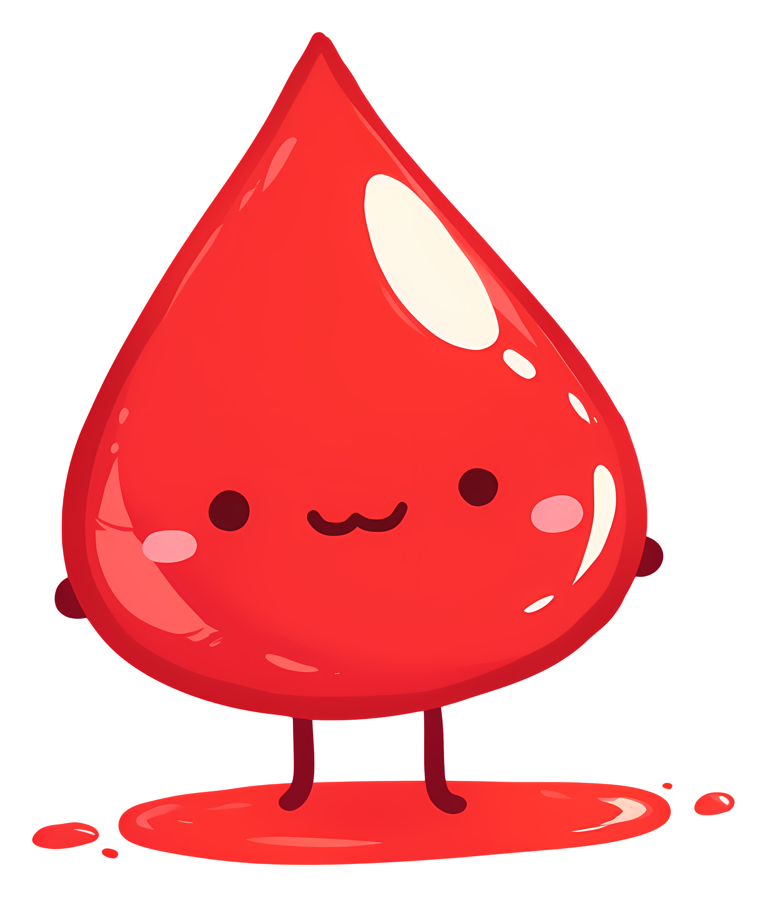

<div class="pos-f-t">

  <!-- <nav class="navbar navbar-dark bg-dark">
    <div class="container">
      <div class="row w-100 align-items-center justify-content-between">
        <div class="col-center">
          <button class="navbar-toggler" type="button" (click)="toggleCollapse()" 
                  aria-controls="navbarToggleExternalContent" aria-expanded="false" aria-label="Toggle navigation">
            <span class="navbar-toggler-icon"></span>
          </button>
          <a class="navbar-brand align-items-center" href="#!">
            
            <span style="color: #e00a0a;">රුහිරු</span><span style="color: #f6f2f2;">මිතුරු</span>
          </a>
        </div>
      </div>
    </div>
  </nav> -->

  <nav class="navbar navbar-dark bg-dark">
    <div class="container d-flex justify-content-center"> <!-- Simplified structure -->
        <a class="navbar-brand d-flex align-items-center" href="#!">
            
            <span style="color: #e00a0a;">RUHIRU</span><span style="color: #f6f2f2;">MITHURU</span>
        </a>
        <button class="navbar-toggler position-absolute start-0 ms-3" type="button" (click)="toggleCollapse()" 
                aria-controls="navbarToggleExternalContent" aria-expanded="false" aria-label="Toggle navigation">
            <span class="navbar-toggler-icon"></span>
        </button>
    </div>
  </nav>


  <div [@collapseExpand]="isCollapsed ? 'collapsed' : 'expanded'" id="navbarToggleExternalContent">
    <div class="bg-dark p-4">
      <div class="container">
        <div class="row align-items-center">
          <div class="col-12 col-md d-flex align-items-center">
            
            <ul class="nav flex-column flex-md-row">
              <li class="nav-item active" *ngIf="!isLoggedIn()">
                <a class="nav-link" routerLink="/home">Home</a>
              </li>
              <li class="nav-item active" *ngIf="!isLoggedIn()">
                <a class="nav-link" routerLink="/home">Services</a>
              </li>
              <li class="nav-item active" *ngIf="!isLoggedIn()">
                <a class="nav-link" routerLink="/home">Contact us</a>
              </li>
              <li class="nav-item active" *ngIf="userService.roleMatch(['ADMIN'])">
                <a class="nav-link" routerLink="/admin">Admin Dashboard</a>
              </li>
              <li class="nav-item active" *ngIf="userService.roleMatch(['USER'])">
                <a class="nav-link" routerLink="/donor">User Dashboard</a>
              </li>
              <li class="nav-item active" *ngIf="userService.roleMatch(['ORGANIZER'])">
                <a class="nav-link" routerLink="/organizer">ORGANIZER Dashboard</a>
              </li>
              <li class="nav-item active" *ngIf="userService.roleMatch(['BLOOD_BANK'])">
                <a class="nav-link" routerLink="/bloodBank">BLOOD BANK Dashboard</a>
              </li>
            </ul>
          </div>

          <div class="col-auto">
            <button *ngIf="!isLoggedIn()" type="button" class="btn btn-primary" routerLink="/login">Login</button>
            <button *ngIf="isLoggedIn()" type="button" class="btn btn-danger" (click)="logOut()">Logout</button>
          </div>
        </div>
      </div>
    </div>
  </div> 
  
</div>

